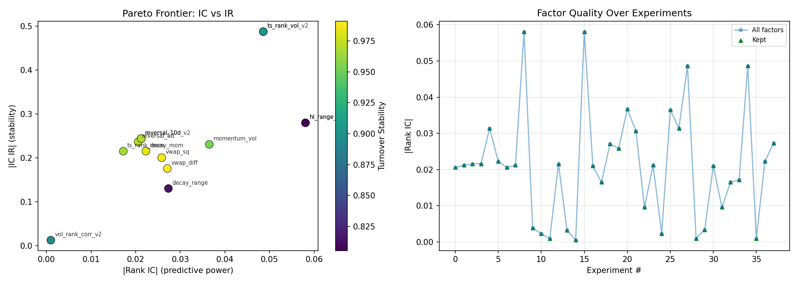
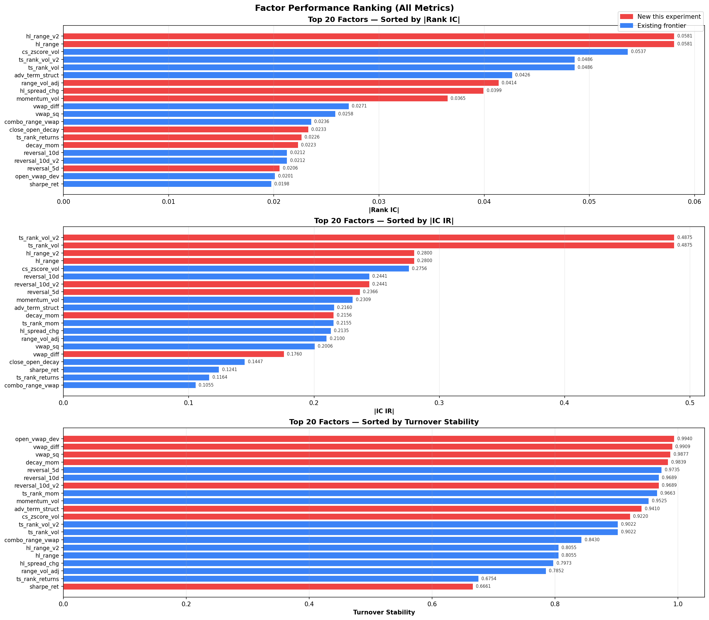

v0.1.0 · 31 Tests · 38 Factors · 14 Frontier
Autonomous Alpha Factor Research
for Chinese A-Shares
AI agents invent, iterate, and optimize quantitative factors guided by Pareto frontier optimization — while you sleep. ~60 experiments per hour, zero human intervention.
RankIC
IC IR
Turnover
Pareto Front
12 Operators
System Architecture
Three files. Infinite experiments.
Agent edits
factors.py
Write 1–10 Factor subclasses per experiment using 12 built-in operators
from prepare import Factor, ops
Read-only
prepare.py
Auto-discover · evaluate 3 metrics · Pareto check · update archive
uv run python prepare.py
Persistent state
pareto_frontier.json
14 non-dominated factors · git-tracked · permanent research record
factors that dominate on ≥1 metric
Three Metrics
First-Principles Evaluation
A factor is only useful if it predicts returns, does so consistently, and is cheap to trade. These three dimensions cannot be maximized simultaneously — they form a Pareto frontier.
Metric 1
RankIC
Cross-Sectional Predictive Power
mean(Spearman(factor, fwd_return))
- Range: [-1, 1] — higher |value| = stronger
- Computed daily, averaged over 2020–2025
- Uses absolute value for Pareto comparison
Metric 2
IC IR
Prediction Stability
mean(IC) / std(IC)
- Signal-to-noise ratio of daily predictions
- IC=0.05 std=0.10 → IR=0.5 (noisy)
- IC=0.04 std=0.04 → IR=1.0 (reliable)
Metric 3
Turnover
Tradeability
1 − mean(|rank_t − rank_{t-1}|)
- Range: [0, 1] — 1.0 = zero trading cost
- 0.5 = half the stocks change rank daily
- High IC + high turnover = useless in practice
Experiment Results
30 Iterations · 38 Factors · 0 Crashes
The first autonomous experiment run explored 12 factor categories — momentum, reversal, volatility, VWAP, Alpha101 classics, and more. Every factor passed evaluation. The Pareto frontier converged to 14 non-dominated factors.


🥇 Best Predictor
hl_range
(high − low) / close
IC = 0.0581
🥈 Most Consistent
ts_rank_vol
−ts_rank(volume, 5)
IR = 0.49
🥉 Cheapest to Trade
vwap_diff
close − vwap
Turnover = 0.991
Pareto Frontier
14 Non-Dominated Factors
Each factor is uniquely valuable: it cannot be improved on any metric without sacrificing another. Dominated factors (28 total) were automatically removed from the archive.
| Factor |
|RankIC| |
IC IR |
Turnover |
Category |
| hl_range | 0.0581 | 0.28 | 0.806 | Price Range |
| ts_rank_vol | 0.0486 | 0.49 | 0.902 | TS Rank |
| momentum_vol | 0.0365 | 0.23 | 0.953 | Combo |
| momentum_turn | 0.0314 | 0.29 | 0.867 | Combo |
| decay_range | 0.0273 | 0.13 | 0.814 | Decay Linear |
| vwap_diff | 0.0271 | 0.18 | 0.991 | VWAP |
| vwap_sq | 0.0258 | 0.20 | 0.988 | VWAP |
| decay_mom | 0.0223 | 0.22 | 0.984 | Decay Linear |
| reversal_10d | 0.0212 | 0.24 | 0.969 | Reversal |
| reversal_5d | 0.0206 | 0.24 | 0.974 | Reversal |
| momentum_long | 0.0216 | 0.21 | 0.945 | Momentum |
| ts_rank_mom | 0.0172 | 0.22 | 0.966 | TS Rank |
Write a Factor
3 lines of code. Auto-discovered.
The agent writes Factor subclasses in factors.py. Each class is automatically discovered, evaluated against the unified dataset, and checked against the Pareto frontier.
factors.py
from prepare import Factor, ops
class Factor001(Factor):
name = "momentum_5d"
def compute(self, df):
m = df.set_index(["datetime", "symbol"])
val = ops.cs_rank(m["close"] - ops.delay(m["close"], 5))
return Factor.as_cs_series(df, val)
12 Operators Available
cs_rank · cs_zscore · ts_rank · rolling_corr · rolling_cov · rolling_std
rolling_sum · rolling_min · rolling_max · delta · delay · decay_linear
16 Data Columns
open · high · low · close · volume · vwap · returns
adv5 · adv10 · adv20 · adv30 · adv40 · adv60 · adv120 · adv150 · adv180